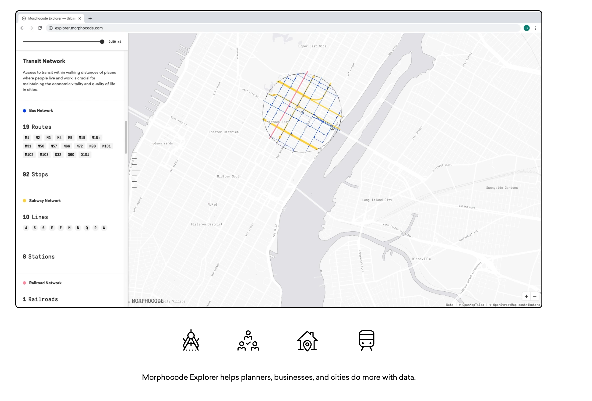

Urban Planning and Design: Class 5 Assignment - Urban Form: Reading the Physical Structure of Cities
Columbia University | Pre-College Programs | Urban Planning and Design | Summer 2026
🗺️ Assignment 5: Urban Form
Reading the Physical Structure of Cities
Date: Monday, July 6, 2026
AM Session: 11:10 a.m.–1:00 p.m.
PM Session: 3:10–5:00 p.m.
Location: 140 Uris Hall
📋 Assignment Overview
In Class 4 we used historical maps and imagery to investigate how cities change through time. Today we shift our attention to a different question:
What is the city made of?
Cities are composed of physical systems that organize movement, development, navigation, and everyday life. Streets, parcels, buildings, infrastructure, transit, and open space combine to create urban form— referred to as the physical structure of the city.
Today’s activities are structured as a series of guided exercises. Rather than producing a finished assignment, you will build a curated GIS study area centered on your observation point while learning how urban designers use spatial data to investigate cities.
GIS is one of several tools we will use throughout the course. The goal is not to learn advanced GIS techniques, but rather to understand how spatial data can help us read and interpret the physical structure of urban environments.
Key Question
What physical structures help people understand, navigate, and experience a city?
🎯 Learning Objectives
By completing today’s exercises, students will be able to:
- Identify major elements of urban form.
- Explore urban datasets using GIS.
- Apply concepts from Kevin Lynch’s The Image of the City.
- Create a curated GIS study area centered on an observation point.
- Connect mapped information to lived urban experience.
📚 Homework Reading
Kevin Lynch
The Image of the City
Read:
- Chapter 1: The Image of the Environment (pp. 1–13)
- The Five Elements (pp. 46–51)
As you read, consider:
- What makes a city easy or difficult to understand?
- Which of Lynch’s five elements appears most important in your observation area?
- How do streets, buildings, infrastructure, and open spaces contribute to the image of a city?
Reading
🧰 Materials
Required
- Laptop computer
- Observation Point from Classes 3 and 4
- Sketchbook
- Class notes
Software / Platforms
- QGIS
- QuickMapServices Plugin
- Morphocode
- NYC Data Package
🗺️ Exercise 1: Investigating Urban Form
Introduction
Urban form can be studied through a variety of spatial datasets. During today’s workshop we will examine several NYC Planning datasets that describe the physical structure of Manhattan.
Available Datasets
- LION Street Centerlines
- Subway Lines & Stops
- MapPLUTO - Parcel Base
- Building Footprints
- NYC Places
- Landmark Sites
- NYC Borough Boundaries
- NYC Zoning Overlay Zones
- NYC Street Centerlines
Discussion
Consider:
- What does each dataset represent?
- What aspect of the city becomes visible?
- Which datasets describe movement?
- Which describe buildings?
- Which describe land ownership or development?
✏️ Exercise 2: Drawing the Image of a City
Introduction
Kevin Lynch argued that people carry mental images of cities rather than complete maps. These images are built from memorable streets, districts, landmarks, edges, and places of activity that help people understand and navigate urban environments.
In this exercise, you will sketch the city you know best—not as an accurate map, but as you remember and experience it.
There is no “correct” drawing.
The goal is to reveal what your memory chooses to preserve.
Sketching Exercise (10 Minutes)
Choose the city, town, or neighborhood you know best.
Using only memory, create a simple sketch showing the places that define your image of that city.
Include as many of Lynch’s five elements as you can:
Paths — streets, sidewalks, transit routes, or corridors you frequently use.
Edges — rivers, highways, rail lines, shorelines, or other boundaries.
Districts — neighborhoods or areas with a distinct identity.
Nodes — important intersections, gathering places, transit stations, or public spaces.
Landmarks — buildings, monuments, bridges, or other memorable reference points.
Do not worry about scale or accuracy.
Focus on what you remember.
Write the name of the city above your drawing.
Reflection and Discussion
After sketching, compare your drawing with classmates.
Discuss:
- Which Lynch elements appeared most frequently?
- What did you leave out?
- Which parts of your city were easiest to remember?
- Which parts disappeared entirely?
- If someone looked only at your sketch, would they recognize your city?
- How did memory simplify the city?
Conclusion
Lynch’s central argument is that people do not remember every street or every building. Instead, they organize cities around a small number of memorable physical elements that together create an image of the city.
The remainder of today’s class asks a new question:
Can we identify those same elements using GIS?
🌐 Exercise 3: Guided Urban Form Exploration (Morphocode)
Introduction
Morphocode provides an accessible way to explore urban datasets without requiring advanced GIS workflows.
Access to Morphocode - https://explorer.morphocode.com/ - Link to Site

During this guided demonstration, we will investigate the area surrounding your observation point and compare multiple urban datasets.
Guided Workflow
Using Morphocode:
- Locate your general observation point.
- Create a 0.5-mile buffer around the site.
- Explore available urban datasets.
- Turn layers on and off.
- Compare how different datasets describe the same location.
Consider
- Which datasets are easiest to interpret?
- Which reveal information that cannot easily be observed in the field?
- Which datasets seem most useful for understanding urban form?
Important
Morphocode provides an excellent environment for exploring urban data, but it does not allow us to export curated datasets. In the next exercise we will perform a similar workflow inside QGIS and create our own GIS study area.
💻 Exercise 4: Building a Curated GIS Study Area
Introduction
Professional GIS workflows often begin by reducing large citywide datasets into a focused project area.
Rather than working with all of Manhattan, we will build a curated GIS dataset centered on your own observation point.
Guided Workflow
Working together in QGIS:
Step 1
-Import your observation point. - Download NYC data package
Step 2
Reproject the point to:
ESRI:103120
Step 3
Create a 0.5-mile buffer around your observation point.
Step 4
Clip each dataset using the buffer (time permitting; we will likely be able to perform a subset of the total data layers available)
Datasets include:
- LION Street Centerlines
- Subway Lines & Stops
- MapPLUTO - Parcel Base
- Building Footprints
- NYC Places
- Landmark Sites
- NYC Borough Boundaries
- NYC Zoning Overlay Zones
- NYC Street Centerlines
Step 5 (Optional - Keep in mnd for final project design in week 3)
Export each clipped layer as an individual Shapefile.
By the end of the workshop you will have created a curated GIS study area containing only the spatial information surrounding your observation point.
Consider
- Why is clipping useful?
- Why work with a focused study area rather than the entire city?
- Which datasets seem most useful for understanding urban form?
- Which datasets might become useful during future design investigations?
✅ Class Completion
Today’s activities are guided workshop exercises.
There is no assignment submission.
Before leaving class you should have:
- Imported your observation point.
- Reprojected the point to ESRI:103120.
- Created a 0.5-mile buffer.
- Clipped each required dataset.
- Exported each curated layer as a Shapefile.
- Saved your QGIS project for future classes.
🔭 Looking Ahead
Tomorrow we will examine how cities are represented through maps, aerial imagery, and physical models during our visit to the Museum of the City of New York.
As you complete today’s exercises, consider the following question:
How do different forms of representation help us understand the physical structure of a city?